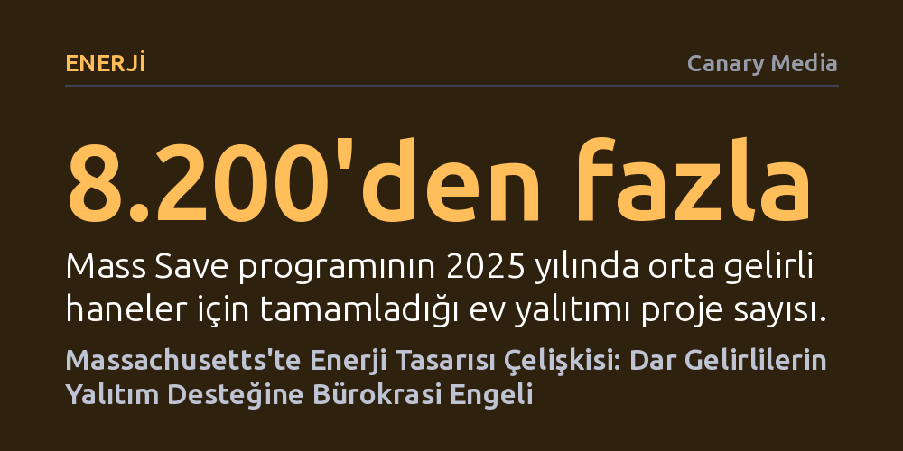

ENERJI · Canary Media · 2026-10-23
Massachusetts'te görüşülen enerji tasarısı, dezavantajlı bölgelerdeki orta gelirli hanelere bürokratik gelir belgeleme zorunluluğu getirerek ücretsiz ev yalıtımı teşviklerine erişimi güçleştiriyor. Bu düzenleme, zengin muhitlerdeki aynı gelir grubunun evraksız yardımdan yararlanmaya devam ettiği çarpık bir eşitsizlik yaratıyor.
İyi niyetli iklim ve enerji politikalarının, masa başında karmaşık bürokratik kurallarla tasarlandığında nasıl tam tersine en kırılgan kesimleri cezalandıran sonuçlar doğurabileceğini gösteriyor.

Massachusetts eyalet meclisinde tartışılan yeni enerji yasa tasarısı, görünüşte enerji verimliliğini artırmayı hedeflerken şaşırtıcı bir bürokratik engeli gündeme getirdi. Tasarıya eklenen bir madde, eyaletin en dezavantajlı mahallelerinde yaşayan orta gelirli ailelerin ücretsiz ev yalıtımı desteği alabilmesi için gelir testi ve vergi evrakları sunmasını şart koşuyor. İşin çelişkili yanı, aynı gelir seviyesindeki aileler daha zengin bir kasabada yaşadıklarında hiçbir belge göstermeden bu hizmetten yararlanmayı sürdürebilecek.
Düzenlemenin yarattığı tezat somut bir örnekle daha net görülüyor: Eyaletin öncelikli eşitlik bölgesi ilan edilen Lawrence kentinde yıllık 200 bin dolar kazanan bir hane hiçbir belge sunmadan ücretsiz yalıtım hakkı kazanırken, hemen yan sokaktaki 90 bin dolar gelirli komşusu bordro ve vergi beyannameleriyle uğraşmak zorunda kalacak. Buna karşılık, birkaç kilometre ötedeki varlıklı Andover kasabasında aynı 90 bin doları kazanan bir aile hiçbir evrak doldurmadan doğrudan ücretsiz destek alabilecek.
Söz konusu tartışmanın merkezinde, eyaletin uzun yıllardır yürüttüğü ve tüm elektrik ile doğalgaz abonelerinin faturalarından toplanan fonlarla finanse edilen enerji verimliliği programı Mass Save yer alıyor. Program; hanelere ücretsiz enerji denetimleri, enerji tasarruflu cihaz indirimleri ve kış soğuklarına karşı kapsamlı ev yalıtımı sağlıyor. Kış şartlarında yapılan doğru bir yalıtım, yıllık enerji faturalarını yüzlerce dolar düşürerek dar gelirli bir ailenin sağlık masraflarını karşılamasına veya çocuklarına temel ihtiyaçlar alabilmesine olanak tanıyor.
Ancak sistemin finansmanına yıllarca faturaları üzerinden katkı sunan dar ve orta gelirli kiracılar ile mülk sahipleri, karmaşık başvuru süreçleri ve evrak bürokrasisi yüzünden programdan uzun süre yeterince faydalanamadı. Özellikle beş veya daha fazla daireli kiralık binalarda kiracıların tadilat yetkisi olmaması, faturaları ödemeyen ev sahiplerinin ise yalıtıma yanaşmaması bu kesimi sistemin dışına itti. Yetkililer bu tıkanıklığı aşmak amacıyla gelir belgeleme zorunluluğunu kaldırarak yardımları hızlandırdı; ardından düşük gelirli ve yoğun kiracılı 21 bölgeyi özel teşvik kapsamına aldı.
Bürokratik engellerin kaldırılmasının sahaya etkisi son derece hızlı ve somut oldu. Orta gelirli aileler için gelir belgesi ibraz etme zorunluluğunun esnetilmesiyle birlikte başvurularda adeta patlama yaşandı. Veriler, programın ulaştığı ölçeği net şekilde kanıtlıyor: Mass Save bünyesinde orta gelirli haneler için tamamlanan yalıtım projesi sayısı 2023 yılında yalnızca 700 civarındayken, 2025 yılına gelindiğinde bu sayı sıçrama yaparak 8 bin 200'ün üzerine çıktı.
Uygun fiyatlı konut yöneticileri ve çevre adaleti savunucuları, idari süreçlerin hafifletilmesinin yardımların gerçek ihtiyaç sahiplerine ulaşmasında kilit rol oynadığını belirtiyor. Yoksul mahallelerde yaşayan insanların çoğunlukla karmaşık formları dolduracak vakti, muhasebe desteği veya resmi evrakları derleme imkânı bulunmuyor; dolayısıyla evrak şartı pratikte doğrudan bir dışlama aracına dönüşüyor.
Yasa tasarısındaki bu dengesiz hükmün kasıtlı bir tercihten ziyade, yüz sayfayı aşan devasa bir mevzuat paketini yetiştirmeye çalışan milletvekillerinin karmaşık bir sistemi sadeleştirme çabası sırasında ortaya çıktığı düşünülüyor. Yine de bu durum, kamu kaynaklarının dağıtımında eşitlik kavramının nasıl tanımlanması gerektiğine dair köklü bir tartışmayı alevlendirdi.
Düzenlemeyi eleştirenler, 21 öncelikli bölgenin şeffaf bir parlamento süreci işletilmeden belirlendiğini ve yüksek gelirli hanelerin sırf o bölgede yaşadıkları için bedava hizmet almasının adil olmadığını savunuyor. Buna karşılık çevre adaleti savunucuları, listenin kamuya açık bir düzenleyici onayından geçtiğini ve yıllarca faturasını ödeyip karşılığını alamayan yoksul kitleleri hızla korumak için bazı varlıklı hanelere de fayda sıçramasının göze alınabilir bir bedel olduğunu vurguluyor.